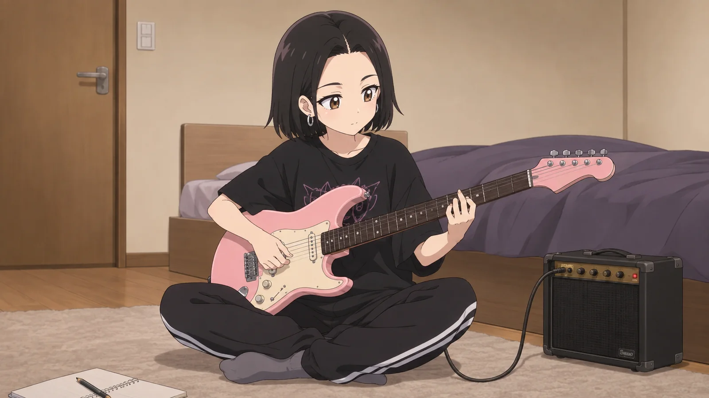

Кьют-рок переживёт все жанры

Жанры обычно умирают от собственной формы
У каждого жанра есть любимая ловушка. Сначала он находит приём, который работает. Потом этот приём повторяют сто человек. Потом тысяча. Потом люди начинают узнавать жанр быстрее, чем песню.
Кьют-рок устроен иначе. У него нет одного обязательного барабанного рисунка, одного типа гитары или одного темпа. Его ядро находится не в аранжировке, а в столкновении вещей, которые принято разводить по разным комнатам: милое и шумное, бытовое и огромное, смешное и болезненное.
Поэтому кьют-рок можно испортить, но его трудно исчерпать. Если надоел поп-панк — он может полезть в шугейз. Если надоел шугейз — в электронику. Если надоела электроника — обратно в гараж. Снаружи всё меняется. Внутри остаётся один принцип: чувство должно быть ближе, чем поза.
Кьют-рок бессмертен не потому, что его нельзя убить. А потому что после каждой смерти он может вернуться другим.
Кьют-рок — жанр-паразит. И это комплимент
Лучшие музыкальные культуры умеют воровать. Хип-хоп воровал сэмплы, рок воровал у блюза, поп ворует вообще у всех и делает вид, что так и было.
Кьют-рок может делать то же самое, только ещё наглее. Берёт у панка скорость, у попа хук, у эмо нерв, у шугейза шум, у J-rock резкость, у hyperpop перегруз, у bedroom pop домашнюю близость. После этого всё ещё можно сказать: да, это кьют-рок.
Потому что узнавание происходит не по списку инструментов. Оно происходит по характеру песни.
Закон: если новый кьют-рок звучит как аккуратная реконструкция старого, это архив, а не будущее.
Через сто лет он всё ещё сможет звучать современно
Самая большая проблема жанра — когда его невозможно обновить без ощущения предательства. С кьют-роком этого ограничения почти нет.
Он не обязан хранить звук 2019 года. Наоборот: если через двадцать лет кьют-рок будет звучать ровно так же, значит жанр провалился.
Правильный кьют-рок будущего должен пугать людей, которые любят только старый кьют-рок. Тогда всё идёт по плану.